Push-T
ForesightIL
Video could not load. Open the MP4.
Diffusion Policy
Video could not load. Open the MP4.
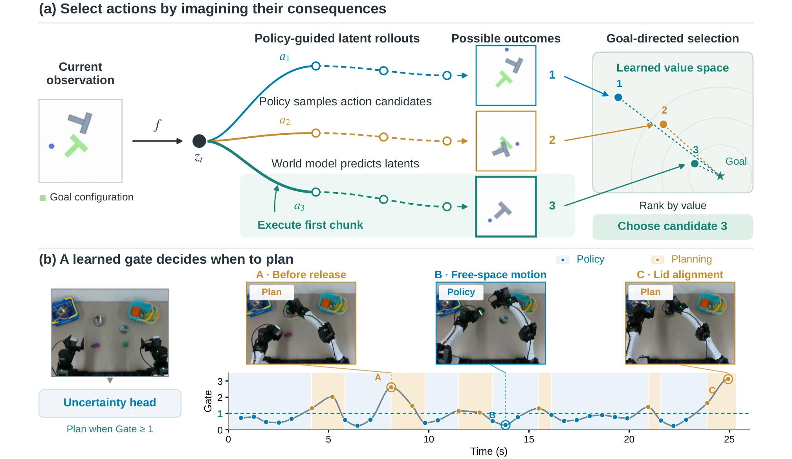
Imitation policies learn useful behaviors from demonstrations, but reactive execution can struggle in long-horizon tasks and unfamiliar states. ForesightIL augments an imitation policy with a latent world model and a self-supervised goal value. The policy proposes plausible actions; the world model predicts their consequences; and the value estimates progress toward the goal. A learned uncertainty signal invokes this search on demand.
The policy and world model share visual features, so the policy can be queried on both observed and imagined states. Each candidate trajectory alternates policy sampling with latent prediction. The planner ranks the terminal states by a goal-conditioned value, executes the selected first action chunk, and receives a new observation before the next decision. Image decoding is used only for visualizing predictions.
Goal value. VIP with temporal straightening learns a representation in which distance to the goal reflects progress. This lets the planner compare trajectories that stop short of task completion.
Planning gate. A learned head estimates uncertainty in the dynamics. The uncertainty score divided by its threshold defines the gate: values below one execute the policy proposal; values at or above one invoke candidate search. The threshold controls planning frequency. Predicted model error is a heuristic for allocating search, not a direct estimate of planning benefit.
We compare planning with direct policy execution on Push-T, LIBERO Goal, and Block Pushing. The videos show sample rollouts from the original experiments; the table reports the current benchmark results. Push-T is measured by maximum target coverage, while the other tasks use success rate.
Video could not load. Open the MP4.
Video could not load. Open the MP4.
Video could not load. Open the MP4.
Video could not load. Open the MP4.
Video could not load. Open the MP4.
Video could not load. Open the MP4.
| Method | Push-T · single | Push-T · multi | Block Pushing | LIBERO Goal |
|---|---|---|---|---|
| HIQL | 0.41 | 0.19 | 0.06 | 0.49 |
| HIQL (subopt.) | 0.39 | 0.22 | 0.05 | 0.33 |
| LDP | 0.24 | 0.10 | 0.18 | 0.11 |
| LDP (subopt.) | 0.25 | 0.10 | 0.21 | 0.07 |
| GPC | 0.72 | 0.62 | 0.25 | 0.87 |
| Diffusion Policy | 0.72 | 0.59 | 0.27 | 0.81 |
| ForesightIL (ungated) | 0.81 | 0.74 | 0.37 | 0.93 |
Comparing predicted outcomes improves over the underlying Diffusion Policy in all four settings.
We evaluate multi-stage manipulation with two YAM arms and pick-and-place and block-pushing tasks with a Franka arm. The bimanual demonstrations below each use a single successful ForesightIL rollout. The policy-only clips show separately recorded failure examples.
Place both toy-food objects in the pot, then put on the lid.
Video could not load. Open the MP4.
Video could not load. Open the MP4.
The BC clip contains low-rate observation frames at their recorded timing and uses an earlier trained policy. It is an illustrative failure example, not a matched-policy comparison.
Insert flowers into the vase, hand the dish across and place it in the tray, and put the ring on the stand.
Video could not load. Open the MP4.
Video could not load. Open the MP4.
Model-free policy Model-based plan. Mode labels and colored timelines follow the executed action. The trace shows its uncertainty score divided by the planning threshold (plan at ≥ 1), with a moving cursor in recorded time. Playback speed is marked in each clip.
| Task / setup | BC | Always plan | Gated ForesightIL |
|---|---|---|---|
| Franka PickPlace | 0.70 | 0.80 | 0.80 |
| Franka BlockPush · single goal | 0.55 | 0.70 | 0.70 |
| Franka BlockPush · multiple goals | 0.45 | 0.75 | 0.65 |
| Bimanual Toy Kitchen | 0.75 | 0.85 | 0.85 |
| Bimanual Desk Cleanup | 0.65 | 0.80 | 0.80 |
Gated planning improves over BC in all five setups and matches observed always-plan success in four of five.
Grasp a bowl and place it on a target surface. These recordings are shown at 2× speed.
Video could not load. Open the MP4.
Video could not load. Open the MP4.
Video could not load. Open the MP4.
Video could not load. Open the MP4.
Video could not load. Open the MP4.
Video could not load. Open the MP4.
Video could not load. Open the MP4.
The controlled gating study compares the same policy, value, and candidate budget within each task. The target planning fraction p is set by threshold calibration; the measured fraction can differ as the controller visits different states.
| Controller | Push-T multi · coverage | Push-T · planned | LIBERO · success | LIBERO · planned |
|---|---|---|---|---|
| Diffusion Policy | 0.59 ± 0.02 | 0.00% | 0.81 ± 0.05 | 0.00% |
| Always plan | 0.74 ± 0.01 | 100.00% | 0.93 ± 0.06 | 100.00% |
| ForesightIL · p = 0.50 | 0.70 ± 0.03 | (45.72 ± 3.94)% | 0.92 ± 0.02 | (51.91 ± 1.37)% |
| ForesightIL · p = 0.30 | 0.68 ± 0.01 | (30.00 ± 2.36)% | 0.85 ± 0.05 | (31.68 ± 0.46)% |
At p = 0.50, evaluation is 1.90× faster on multi-goal Push-T and 1.26× faster on LIBERO than always planning. These wall times include the simulator.
These experiments isolate the score used to rank imagined trajectories. The policy and world model remain fixed.
| Scoring function | N = 4 | N = 16 | N = 32 |
|---|---|---|---|
| Latent MSE | 0.77 ± 0.06 | 0.76 ± 0.04 | 0.76 ± 0.05 |
| Temporal regression | 0.77 ± 0.05 | 0.76 ± 0.01 | 0.77 ± 0.01 |
| Metric temporal regression | 0.78 ± 0.03 | 0.80 ± 0.03 | 0.80 ± 0.02 |
| VIP | 0.78 ± 0.05 | 0.78 ± 0.04 | 0.79 ± 0.04 |
| VIP + temporal straightening | 0.79 ± 0.03 | 0.80 ± 0.01 | 0.81 ± 0.02 |
VIP with temporal straightening has the highest mean coverage at each candidate budget. Straightening changes the value projection; the policy and dynamics predictor stay fixed.
Given a goal image, the planner samples from separately trained specialists and ranks their predicted outcomes. The constituent policies remain fixed.
| Method | Push-T | Franka BlockPush |
|---|---|---|
| Specialists · own-task average | 0.54 | 0.55 |
| Multi-task policy | 0.70 | 0.45 |
| ForesightIL · fused policies | 0.73 | 0.60 |
The planner samples from fixed specialists and selects by predicted goal progress. The fused controller outperforms the multi-task baseline in both settings.
A flow-map policy generates actions with one network evaluation, compared with ten for flow matching. The comparison uses the same three-camera inputs, 20-step action chunks, and planning budget.
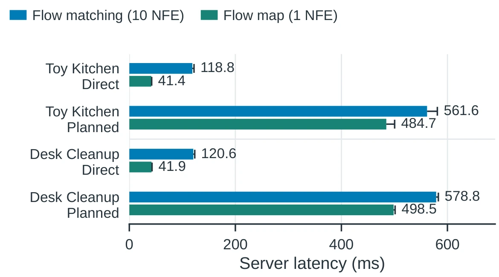
Observed frames appear above decoded predictions. After three context observations, the model follows recorded actions without new observations. The first displayed column is the final context frame; frames are aligned at six frames per second.
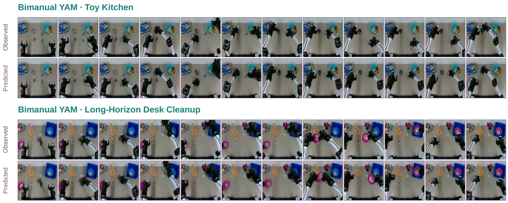
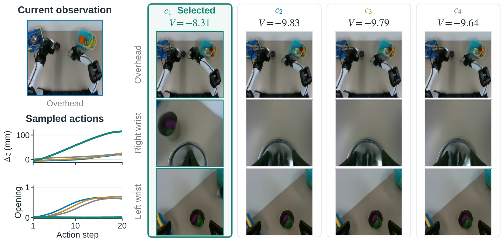
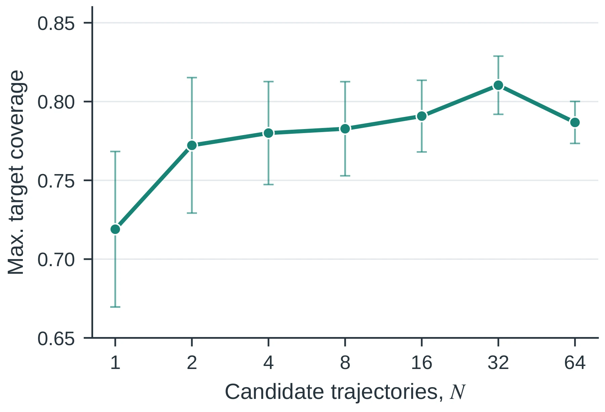
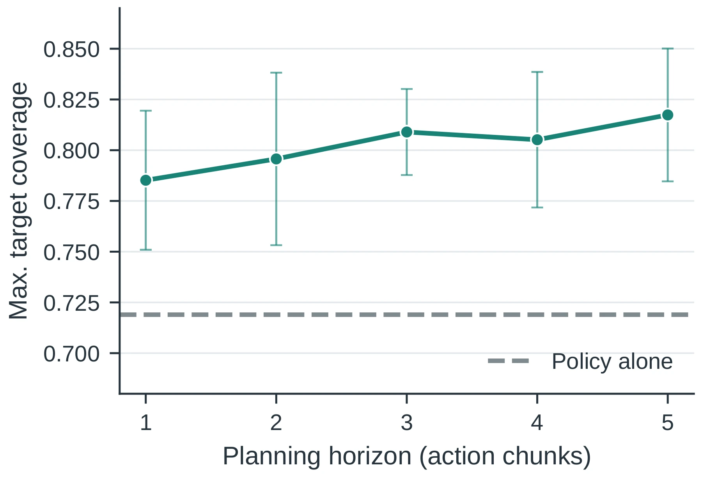
Single-goal Push-T with VIP and temporal straightening. Error bars show ±1 sample SD across three seeds, with 50 episodes per seed.
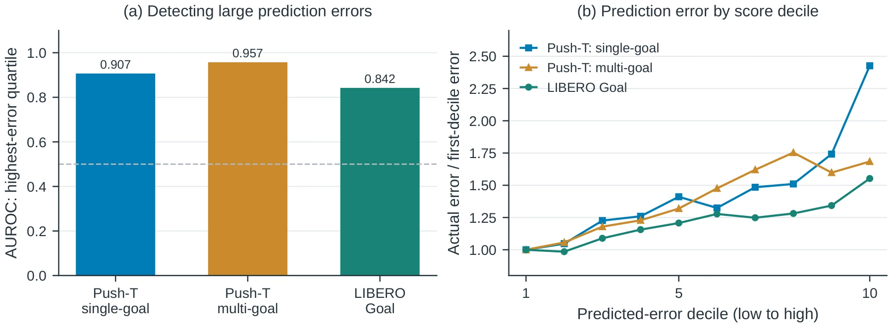
Higher-scoring bins generally have larger realized prediction errors. These are observed transitions, not imagined rollout states. This measures error detection, not the benefit of planning.
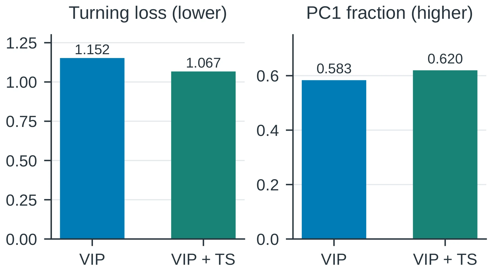
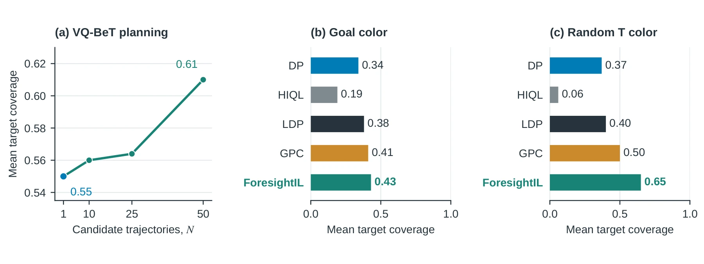
All methods are trained on in-distribution observations. Only means are available; the VQ-BeT curve is reconstructed from the original evaluation plot.
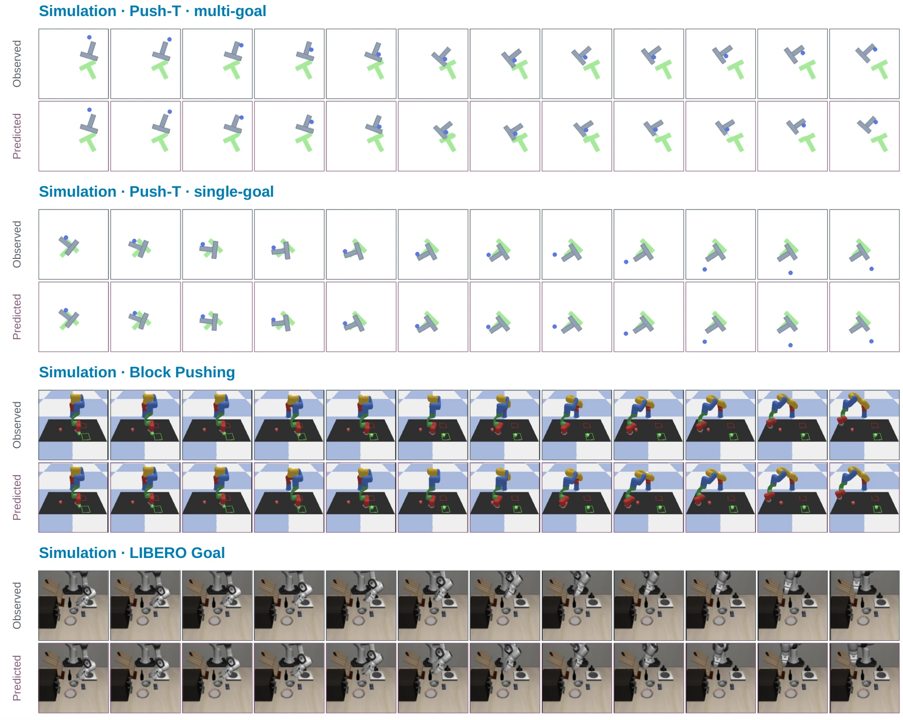
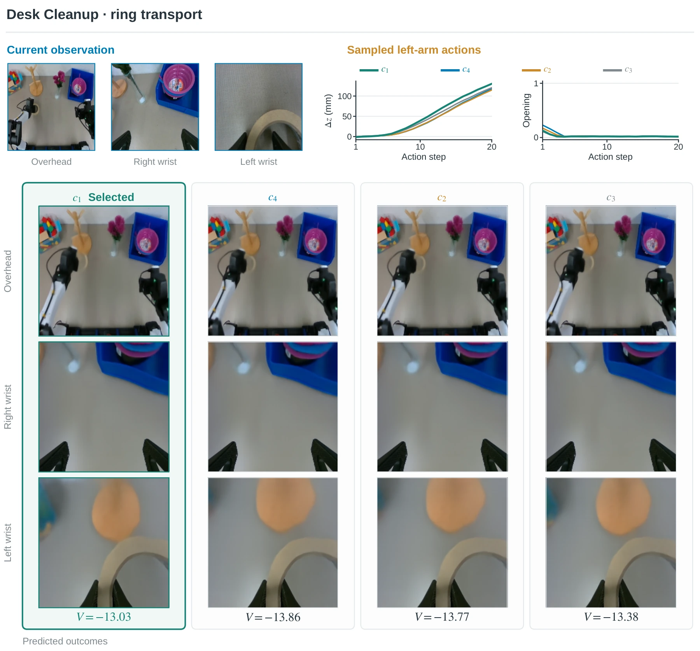
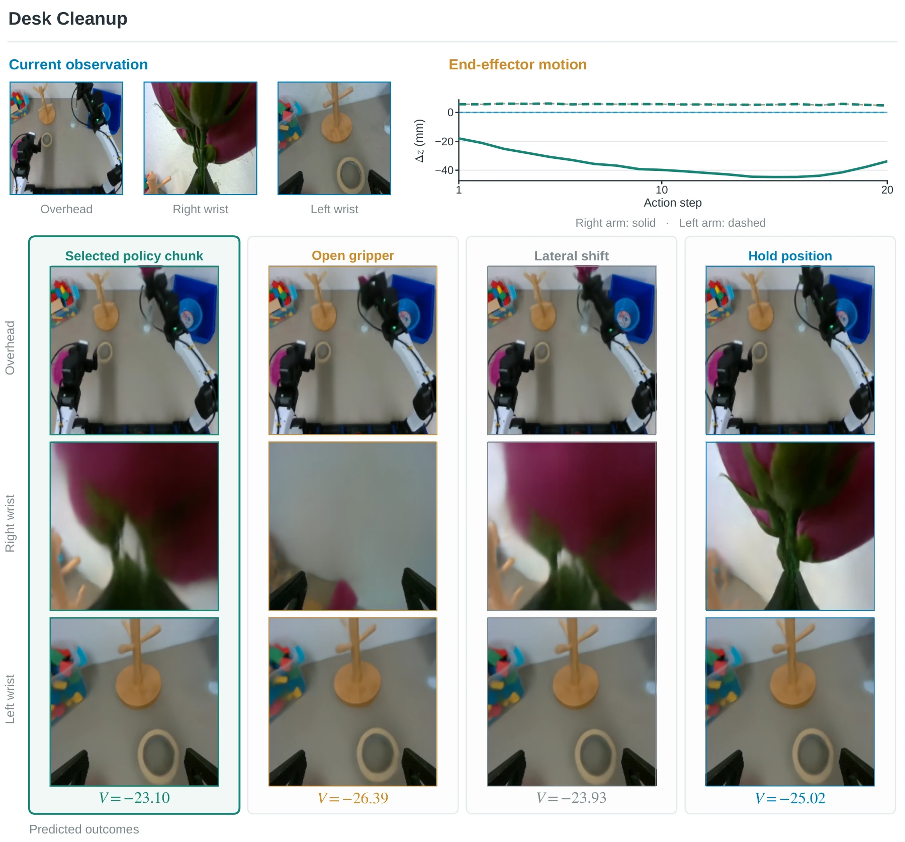
A three-minute walkthrough of the method, experiments, and robot demonstrations. No narration.
Video could not load. Open the MP4.
{kind=link}
{kind=link}
{kind=link}
{kind=link}
{kind=link}
{kind=link}